Peter Parker, The Spectacular Spider-Man (1976 - 1987)
| Comic Book | Release Date | Cover |
|---|---|---|
| Peter Parker, The Spectacular Spider-Man #1 Twice Stings the Tarantula! | 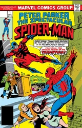 | |
| Peter Parker, The Spectacular Spider-Man #2 Kraven Is the Hunter | 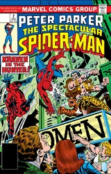 | |
| Peter Parker, The Spectacular Spider-Man #3 ...And There Was Lightmaster! | 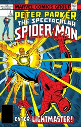 | |
| Peter Parker, The Spectacular Spider-Man #4 The Vulture Is a Bird of Prey | 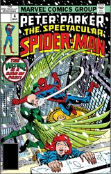 | |
| Peter Parker, The Spectacular Spider-Man #5 Spider-Kill | 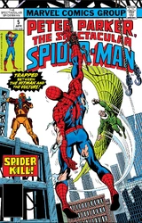 | |
| Peter Parker, The Spectacular Spider-Man #6 The Power to Purge! | 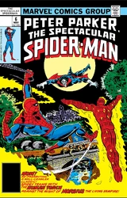 | |
| Peter Parker, The Spectacular Spider-Man #7 Cry Mayhem -- Cry Morbius! | 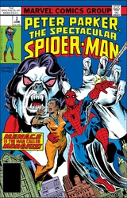 | |
| Peter Parker, The Spectacular Spider-Man #8 ... And Only One Shall Survive! | 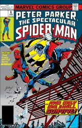 | |
| Peter Parker, The Spectacular Spider-Man #9 ...Like a Tiger in the Night! | 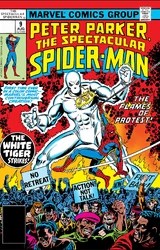 | |
| Peter Parker, The Spectacular Spider-Man #10 Tiger In a Web! | 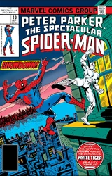 | |
| Peter Parker, The Spectacular Spider-Man #11 A Life Too Far | 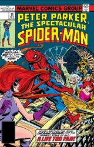 | |
| Peter Parker, The Spectacular Spider-Man #12 Brother Power, Sister Sun! | 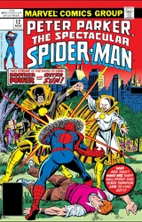 | |
| Peter Parker, The Spectacular Spider-Man #13 ...The Coming of Razorback! | 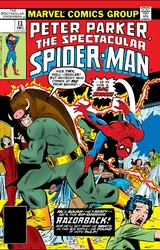 | |
| Peter Parker, The Spectacular Spider-Man #14 Killing Me Softly...With His Hate! | 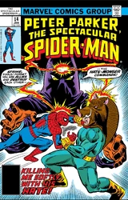 | |
| Peter Parker, The Spectacular Spider-Man #15 The Final Rage! | 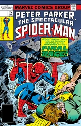 | |
| Peter Parker, The Spectacular Spider-Man #16 The Beetle and the Badge! | 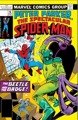 | |
| Peter Parker, The Spectacular Spider-Man #17 Whatever Happened to the Iceman? | 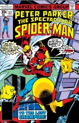 | |
| Peter Parker, The Spectacular Spider-Man #18 My Friend, My Foe! | 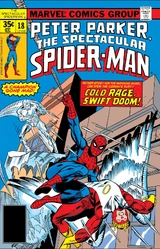 | |
| Peter Parker, The Spectacular Spider-Man #19 Again, the Enforcers! | 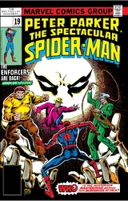 | |
| Peter Parker, The Spectacular Spider-Man #20 Where Were You When the Lights Went Out? | 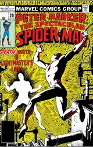 | |
| Peter Parker, The Spectacular Spider-Man #21 Still Crazy After All These Years | 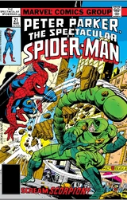 | |
| Peter Parker, The Spectacular Spider-Man #22 By the Light of the Silvery Moon Knight! | 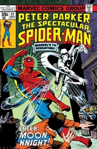 | |
| Peter Parker, The Spectacular Spider-Man #23 Guess Who's Buried In Grant's Tomb! | 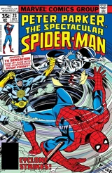 | |
| Peter Parker, The Spectacular Spider-Man #24 Spider-Man Night Fever | 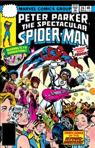 | |
| Peter Parker, The Spectacular Spider-Man #25 Carrion, My Wayward son! | 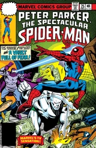 | |
| Peter Parker, The Spectacular Spider-Man #26 Mine Eyes Have Seen the Glory | 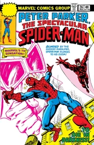 | |
| Peter Parker, The Spectacular Spider-Man #27 The Blind Leading the Blind | 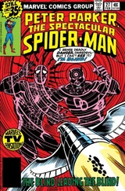 | |
| Peter Parker, The Spectacular Spider-Man #28 Ashes to Ashes! | 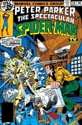 | |
| Peter Parker, The Spectacular Spider-Man #29 Dust to Dust! | 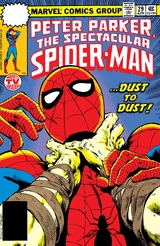 | |
| Peter Parker, The Spectacular Spider-Man #30 Secret As the Grave! | 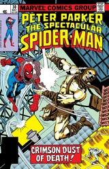 | |
| Peter Parker, The Spectacular Spider-Man #31 Til Death do us Part! | 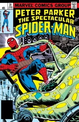 | |
| Peter Parker, The Spectacular Spider-Man #32 A Zoo Story | 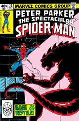 | |
| Peter Parker, The Spectacular Spider-Man #33 Night Of the Iguana! | 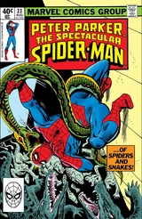 | |
| Peter Parker, The Spectacular Spider-Man #34 Lizards on a Hot Tin Roof! | 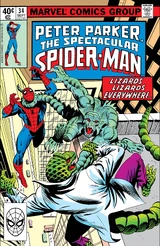 | |
| Peter Parker, The Spectacular Spider-Man #35 Labyrinth | 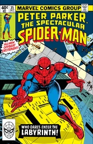 | |
| Peter Parker, The Spectacular Spider-Man #36 Enter: Swarm! | 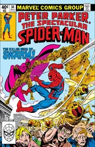 | |
| Peter Parker, The Spectacular Spider-Man #37 Into the Hive! | 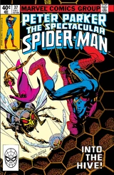 | |
| Peter Parker, The Spectacular Spider-Man #38 Curse of the Living Vampire! | 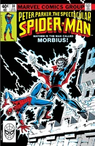 | |
| Peter Parker, The Spectacular Spider-Man #39 Scourge of the Schizoid-Man | 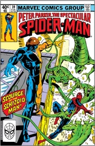 | |
| Peter Parker, The Spectacular Spider-Man #40 The Terrible Turnabout! | 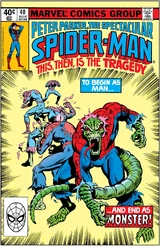 | |
| Peter Parker, The Spectacular Spider-Man #41 Meteor Madness! | 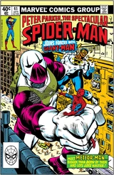 | |
| Peter Parker, The Spectacular Spider-Man #42 Give Me Liberty or Give Me Death! | 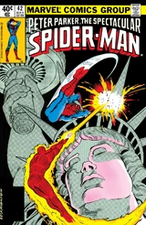 | |
| Peter Parker, The Spectacular Spider-Man #43 Pretty Poison | 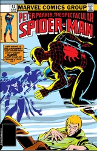 | |
| Peter Parker, The Spectacular Spider-Man #44 The Vengeance Gambit | 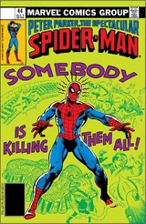 | |
| Peter Parker, The Spectacular Spider-Man #45 Wings of Fire, Wings of Fear | 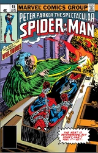 | |
| Peter Parker, The Spectacular Spider-Man #46 Deadly is The Cobra! | 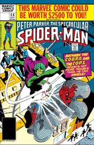 | |
| Peter Parker, The Spectacular Spider-Man #47 A Night On the Prowl! | 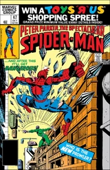 | |
| Peter Parker, The Spectacular Spider-Man #48 Double Defeat | 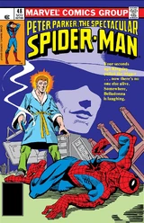 | |
| Peter Parker, The Spectacular Spider-Man #49 Enter: The Smuggler! | 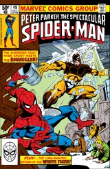 | |
| Peter Parker, The Spectacular Spider-Man #50 Dilemma! | 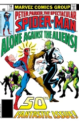 | |
| Peter Parker, The Spectacular Spider-Man #51 Aliens and Illusions! | ||
| Peter Parker, The Spectacular Spider-Man #52 The Day of the Hero Killers! | ||
| Peter Parker, The Spectacular Spider-Man #53 Toys of the Terrible Tinkerer | ||
| Peter Parker, The Spectacular Spider-Man #54 To Save the Smuggler! | ||
| Peter Parker, The Spectacular Spider-Man #55 The Big Blow Out | ||
| Peter Parker, The Spectacular Spider-Man #56 The Peril...and the Pumpkin? | ||
| Peter Parker, The Spectacular Spider-Man #57 These Wings Enslaved! | ||
| Peter Parker, The Spectacular Spider-Man #58 Ring Out the Old, Ring In the New! | ||
| Peter Parker, The Spectacular Spider-Man #59 I Want Spider-Man! | ||
| Peter Parker, The Spectacular Spider-Man #60 Beetlemania! | ||
| Peter Parker, The Spectacular Spider-Man #61 By the Light of the Silvery Moonstone | ||
| Peter Parker, The Spectacular Spider-Man #62 Gold Fever! | ||
| Peter Parker, The Spectacular Spider-Man #63 Firebug | ||
| Peter Parker, The Spectacular Spider-Man #64 Cloak and Dagger! | ||
| Peter Parker, The Spectacular Spider-Man #65 The Heart is a Lonely Hunter | ||
| Peter Parker, The Spectacular Spider-Man #66 Electro Will Be Free | ||
| Peter Parker, The Spectacular Spider-Man #67 Boomerang the Killer That Keeps Coming Back! | ||
| Peter Parker, The Spectacular Spider-Man #68 Hell Hath No Fury Like a Robot Scorned! | ||
| Peter Parker, The Spectacular Spider-Man #69 In Darkness Seldom Seen! | ||
| Peter Parker, The Spectacular Spider-Man #70 The Great Cloak & Dagger Hunt | ||
| Peter Parker, The Spectacular Spider-Man #71 With This Gun...I Thee Kill! | ||
| Peter Parker, The Spectacular Spider-Man #72 Waiting for Doctor Octopus | ||
| Peter Parker, The Spectacular Spider-Man #73 Peter Parker, You Are the Spectacular Spider-Man! | ||
| Peter Parker, The Spectacular Spider-Man #74 Fantasia! | ||
| Peter Parker, The Spectacular Spider-Man #75 Ferrae Naturae (Wild Beasts) | ||
| Peter Parker, The Spectacular Spider-Man #76 At Death's Door! | ||
| Peter Parker, The Spectacular Spider-Man #77 Relapse Times Two | ||
| Peter Parker, The Spectacular Spider-Man #78 The Long Goodbye | ||
| Peter Parker, The Spectacular Spider-Man #79 The Final Battle | ||
| Peter Parker, The Spectacular Spider-Man #80 I Cover the Waterfront | ||
| Peter Parker, The Spectacular Spider-Man #81 Stalkers In the Shadows | ||
| Peter Parker, The Spectacular Spider-Man #82 Crime and Punishment | ||
| Peter Parker, The Spectacular Spider-Man #83 Delusions | ||
| Peter Parker, The Spectacular Spider-Man #84 Kidnapped | ||
| Peter Parker, The Spectacular Spider-Man #85 The Hatred of the Hobgoblin | ||
| Peter Parker, The Spectacular Spider-Man #86 Bugs! | ||
| Peter Parker, The Spectacular Spider-Man #87 Mistaken Identities | ||
| Peter Parker, The Spectacular Spider-Man #88 Hyde and Seek | ||
| Peter Parker, The Spectacular Spider-Man #89 Power Search | ||
| Peter Parker, The Spectacular Spider-Man #90 Where, Oh Where Has My Spider-Man Gone? | ||
| Peter Parker, The Spectacular Spider-Man #91 If It Wasn't For Bad Luck... | ||
| Peter Parker, The Spectacular Spider-Man #92 And the Answer Is... | ||
| Peter Parker, The Spectacular Spider-Man #93 A Hot Time In the Old Morgue Tonight | ||
| Peter Parker, The Spectacular Spider-Man #94 How Ya Gonna Keep 'Em Down at the Morgue After They've Seen NYC? | ||
| Peter Parker, The Spectacular Spider-Man #95 The Dagger At the End of the Tunnel! | ||
| Peter Parker, The Spectacular Spider-Man #96 The Final Answer! | ||
| Peter Parker, The Spectacular Spider-Man #97 Hermit-Age! | ||
| Peter Parker, The Spectacular Spider-Man #98 True Confessions! | ||
| Peter Parker, The Spectacular Spider-Man #99 Spider on the Spot! | ||
| Peter Parker, The Spectacular Spider-Man #100 Breakin'! | ||
| Peter Parker, The Spectacular Spider-Man #101 Echoes... | ||
| Peter Parker, The Spectacular Spider-Man #102 A Life for a Life! | ||
| Peter Parker, The Spectacular Spider-Man #103 Compulsion! | ||
| Peter Parker, The Spectacular Spider-Man #104 The Last Race | ||
| Peter Parker, The Spectacular Spider-Man #105 United We Fall | ||
| Peter Parker, The Spectacular Spider-Man #106 No Fury | ||
| Peter Parker, The Spectacular Spider-Man #107 Original Sin | ||
| Peter Parker, The Spectacular Spider-Man #108 Sin of Pride | ||
| Peter Parker, The Spectacular Spider-Man #109 He Who Is Without Sin | ||
| Peter Parker, The Spectacular Spider-Man #110 All My Sins Remembered | ||
| Peter Parker, The Spectacular Spider-Man #111 ...And Then the Gods Cried. | ||
| Peter Parker, The Spectacular Spider-Man #112 You Never Make a Sound | ||
| Peter Parker, The Spectacular Spider-Man #113 Mayhem | ||
| Peter Parker, The Spectacular Spider-Man #114 The Key | ||
| Peter Parker, The Spectacular Spider-Man #115 Things Fall Apart | ||
| Peter Parker, The Spectacular Spider-Man #116 102 Uses for a Dead Cat | ||
| Peter Parker, The Spectacular Spider-Man #117 Dinner Hour | ||
| Peter Parker, The Spectacular Spider-Man #118 Ashes To Ashes | ||
| Peter Parker, The Spectacular Spider-Man #119 Catfight! | ||
| Peter Parker, The Spectacular Spider-Man #120 A House Is Not a Home | ||
| Peter Parker, The Spectacular Spider-Man #121 Eye Witness! | ||
| Peter Parker, The Spectacular Spider-Man #122 Father's Night Out | ||
| Peter Parker, The Spectacular Spider-Man #123 With Friends Like These... | ||
| Peter Parker, The Spectacular Spider-Man #124 When Strikes the Octopus! | ||
| Peter Parker, The Spectacular Spider-Man #125 Wrecking Havoc! | ||
| Peter Parker, The Spectacular Spider-Man #126 Sudden Impact | ||
| Peter Parker, The Spectacular Spider-Man #127 Among Us Lurks ... a Lizard! | ||
| Peter Parker, The Spectacular Spider-Man #128 Spider Hunt | ||
| Peter Parker, The Spectacular Spider-Man #129 Foreign Affairs | ||
| Peter Parker, The Spectacular Spider-Man #130 24 Hours | ||
| Peter Parker, The Spectacular Spider-Man #131 Descent | ||
| Peter Parker, The Spectacular Spider-Man #132 Ascending | ||
| Peter Parker, The Spectacular Spider-Man #133 I Am Spider! |